头像
一开始是先去查了RGB通道，没有发现，后来直接在WSL下用strings然后grep关键字flag就得到了flag，但是提交一直失败，后面才发现得到的flag是先用base64加密过的，要解密然后再用md5，提交成功
0和1的故事
文件压缩了三次，分别是tar.gz,rar,zip,一开始直接用strings发现了以下结果
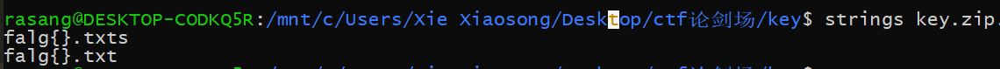
当时就一直以为是zip文件里面藏了一个文件，一直在想办法修复，全然忘记题目提示，后来经同学提醒，发现解压出来的txt文件里面有tab和空格，联想题目空格和0很配，将空格替换成0，tab替换成1，得到一串二进制数字，然后我就在这里卡了很久，最后群里有做过的大佬跟我讲我才知道转化成十六进制就是flag的内容了，但是说实话这flag我看着啥也不像，唉
web1
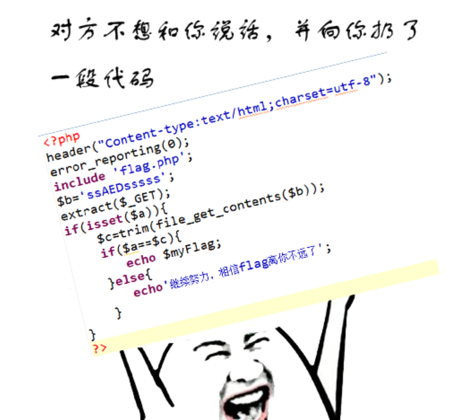
extract，很明显的变量覆盖，令a等于空，然后给b传一个不存在的文件，就得到flag了
web2
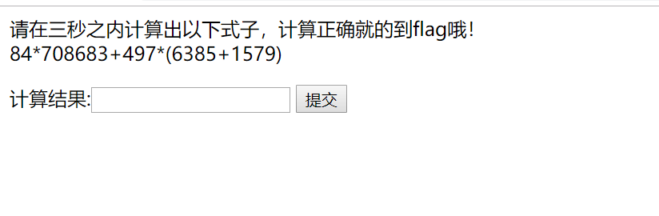
脚本题，刚好昨天接触了点正则表达式，借python的re库来试试，脚本如下
1 | import requests |
直接得到flag
web26
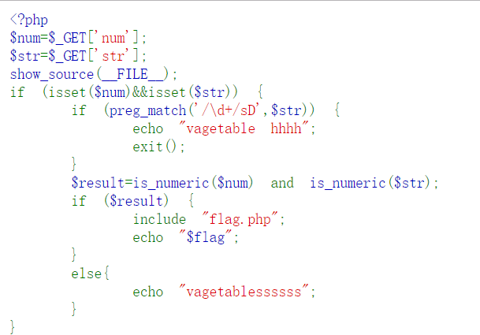
preg_match的str直接用数组就可以绕过，后来发现别人用长字符串也能绕过，神奇
web9
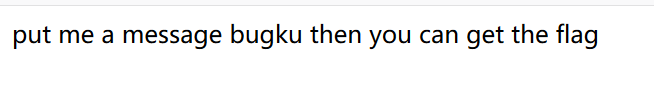
题目说要PUT一个bugku，在此之前我都不知道PUT这种方法，除此之外还有一个叫DELETE
1、GET请求会向数据库发索取数据的请求，从而来获取信息，该请求就像数据库的select操作一样，只是用来查询一下数据，不会修改、增加数据，不会影响资源的内容，即该请求不会产生副作用。无论进行多少次操作，结果都是一样的。
2、与GET不同的是，PUT请求是向服务器端发送数据的，从而改变信息，该请求就像数据库的update操作一样，用来修改数据的内容，但是不会增加数据的种类等，也就是说无论进行多少次PUT操作，其结果并没有不同。
3、POST请求同PUT请求类似，都是向服务器端发送数据的，但是该请求会改变数据的种类等资源，就像数据库的insert操作一样，会创建新的内容。几乎目前所有的提交操作都是用POST请求的。
4、DELETE请求顾名思义，就是用来删除某一个资源的，该请求就像数据库的delete操作。
web6
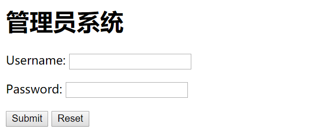
尝试admin admin发现会这样
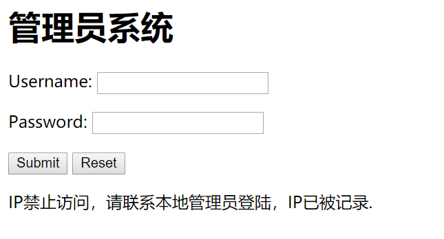
于是祭出我的一堆本地头,但是账号密码还是不对
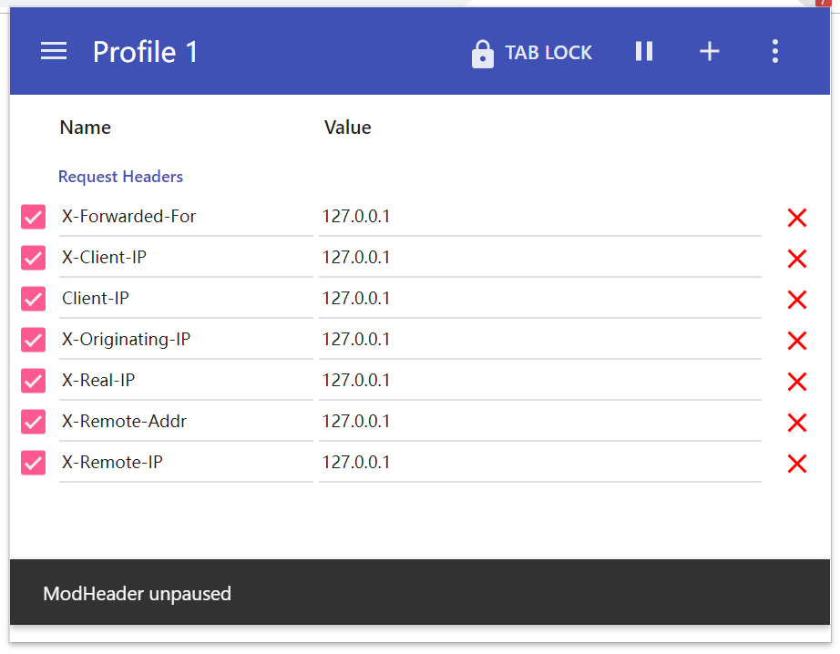
在最下面发现一个提示，藏得太深了，以后f12和源代码都得认真看
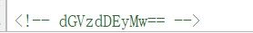
摆明了密码就是base64解密后的结果，获得flag
流量审计

追踪TCP流就可以拿到flag，没什么好说的
web11
看主页名字很明显robots.txt有问题，直接查看，发现有个shell.php
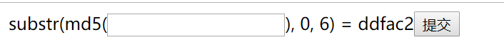
拿下面的php脚本爆破一下得到flag
1 |
|
日志审计
下意识用strings搜索flag，发现很多类似注入的痕迹

用url解码一下，看得更清楚，注意这一排，应该就是我们想要的结果了
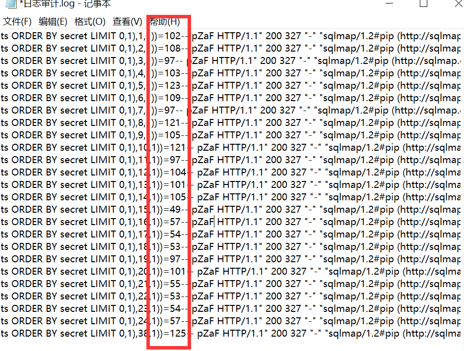

web13
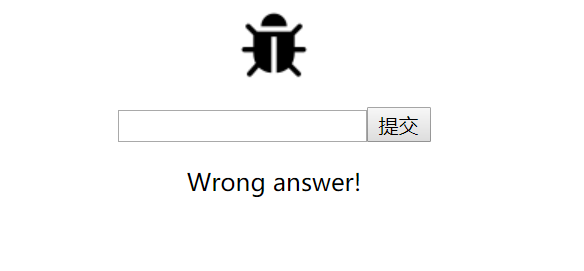
经尝试没有注入，但是在响应头发现了这个
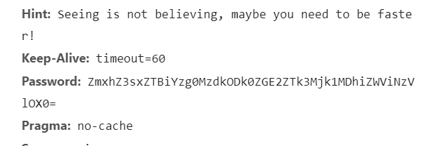
解码后是个flag， 尝试提交不是正确答案，试试提交到index.php里面
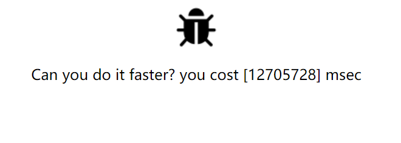
又是一道脚本题目，如下
1 | import requests |
web18
在list页面有经典的sql注入
测试发现and or select union均被过滤，但是可以双写绕过，最终payload如下：
?id=0' uniunionon selselectect 1,group_concat(table_name),3 from infoorrmation_schema.tables where table_schema=database()--+
?id=0' uniunionon selselectect 1,group_concat(column_name),3 from infoorrmation_schema.columns where table_name='flag'--+
?id=0' uniunionon selselectect 1,group_concat(flag),3 from flag--+
web20
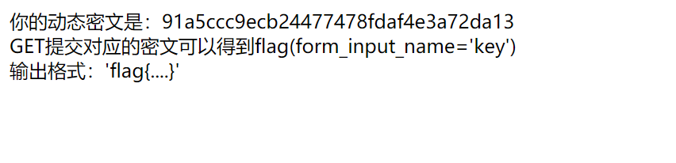
快速提交题，直接上python脚本了
1 | import requests |
web3
我一进去就看见文件包含在伪装上传漏洞
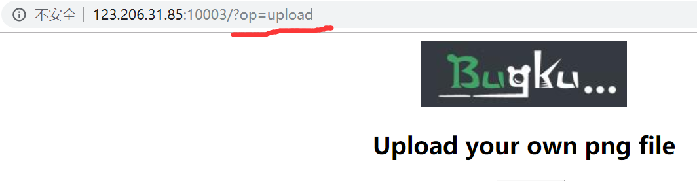
1 | ?op=php://filter/read=convert.base64-encode/resource=flag |
web4
万能密码直接登录获得flag
web14
尝试了index.bak无果，但是听说有git泄露，试了也是404，后来看见有一个git泄露恢复工具叫Githaker，命令行下直接
python3 GitHacker.py http://123.206.31.85:10014/.git
得到源码，得到flag
web21
进去提示我不是管理员，右键查看原代码有注释
1 | $user = $_GET["user"]; |
file_get_contents用于读取文件内容，这里我们用php://input读取内容，然后下面有个include($file),我们可以用伪协议来读取提示的class.php的文件内容file=php://filter/convert.base64-encode/resource=class.php,得到class.php如下：
1 |
|
直接读取f1a9.php无回显，我们读取index.php看看：
1 | <?php |
f1a9被过滤掉的，但是我们可以结合之前的class.php，先把他包含进来，然后反序列化f1a9传给pass，echo触发__toString魔术方法，这样就可以直接读取f1a9.php的内容了
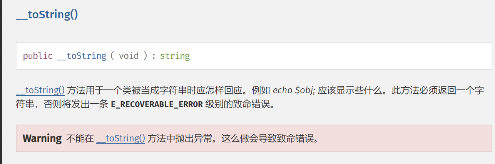
这里pass反序列化的内容我们可以自己写一个php序列化一下得到，然后flag就出来啦
web23
扫描器扫了一波，发现有登录页面和readme.txt,得知账号为admin,密码是三位数,验证码是时间戳,当时想用python脚本来突破,但是不行
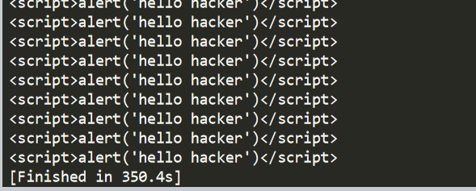
有两个登录页面,一个是login.php,一个是login.html,在html填写的账号密码验证码会发送给php来验证,但是直接访问php会出现上面的情况,当时想过添加header或者cookie,但是都不行
后来同学提醒我只要sesion不变,验证码也不会变…好吧,直接上bp爆破一遍,得到flag
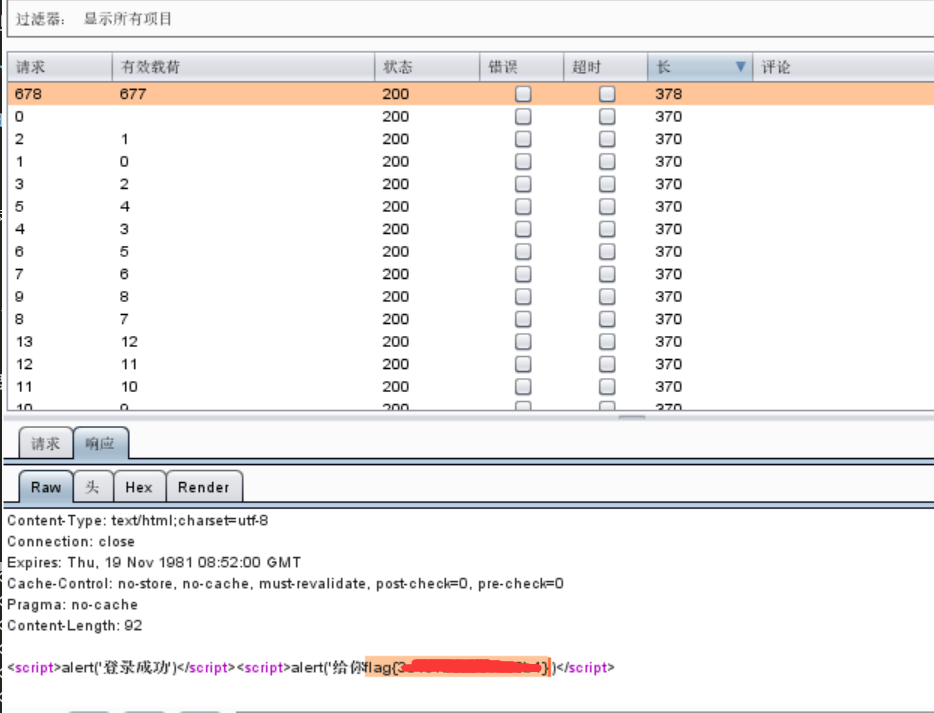